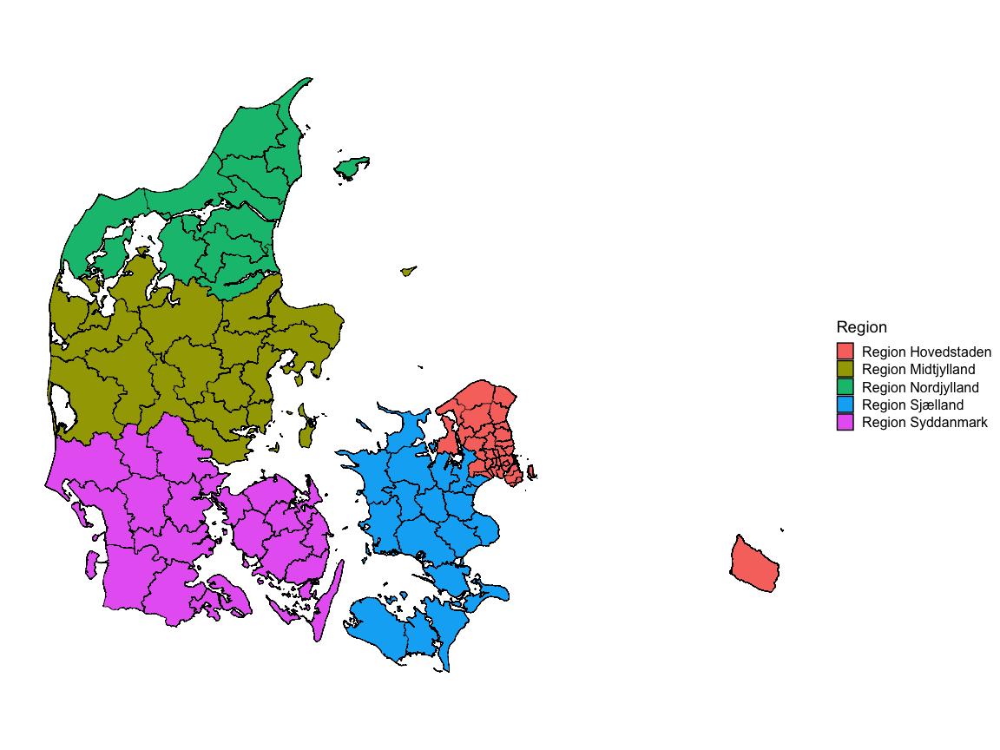

The goal of dawaR is to make access to the Danish Web Address API convenient for many more users.
TO DO before CRAN-submission
-
- I used to have problems with a dependency that would convert the time column provided by
get_map_data(). It is fixed with commit23ade73. - I currently have an issue with the date-time column is converted to local time instead of UTC as is provided by the API. This causes differences between my local development machine and Github Actions.
- I used to have problems with a dependency that would convert the time column provided by
-
- These will basically be wrappers for other functions in the package and will provide another level of convenience for non-technincal users.
Installation
You can install the development version of dawaR from GitHub with:
# install.packages("pak")
pak::pak("aleksanderbl29/dawaR")Examples
This package has multiple use cases, though they all revolve around data from the Danish Web Address API.
Using DAWA map data
The function get_map_data() fetches data in geojson format and transforms the geometries to sf polygons. These polygons can be drawn as nice maps with ggplot2.
library(dawaR)
library(ggplot2)
municipalities <- get_map_data("kommuner")
ggplot(municipalities, aes(fill = regionsnavn)) +
geom_sf(color = "black") +
cowplot::theme_map()